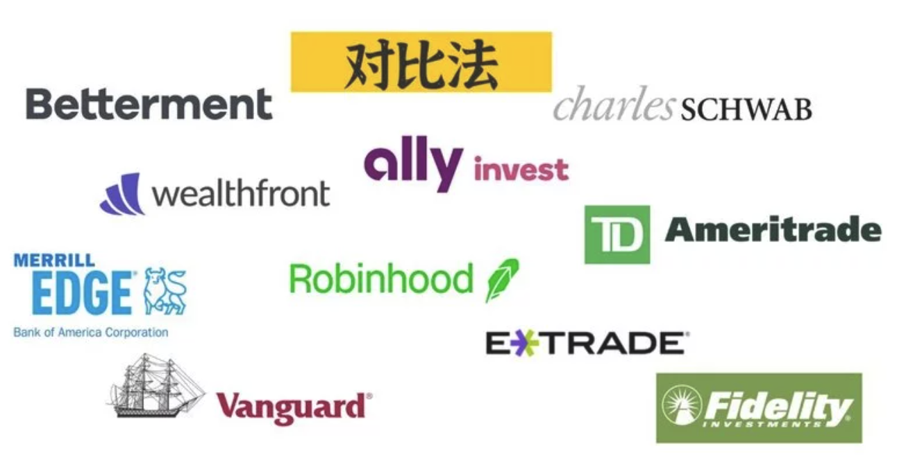

本文简要整理一些股市的基础概念，以便自己日后查找。对于理财，除了买定期和国债外，还可以考虑一下股市。不过股市有风险，入市需谨慎~
基础概念
一级市场和二级市场
对于一级市场，是公司本身将证券卖给投资者，这个买卖价款是会给到公司的。而对于二级市场，是投资者之间互相买卖，理论上，无论怎么买卖，公司都收不到一分钱。
一二级市场的联系：首先一级市场是二级市场的基础，如果不在一级市场卖出去，公司的证券就不会流到二级市场。而二级市场又是一级市场存在的条件，因为二级市场为公司证券提供了流动性。
空头和多头
- 做多：是一种金融市场如股票、外汇或期货等术语：就是看好股票、外汇或期货等未来的上涨前景而进行买入持有等待上涨获利。 做多就是做多头，多头对市场判断是上涨，就会立即进行股票买入，所以做多就是买入股票、外汇或期货等。
- 做空：做空，是一个投资术语，是金融资产的一种操作模式。与做多相对，做空是先借入标的资产，然后卖出获得现金，过一段时间之后，再支出现金买入标的资产归还。做空的常见作用有投机、融资和对冲。其中用做空投机是指预期未来行情下跌，则卖高买低，将手中借入的股票按目前价格卖出，待行情跌后买进再归还，获取差价利润。其交易行为特点为先卖后买。实际上有点像商业中的赊货交易模式。这种模式在价格下跌的波段中能够获利，就是先在高位借货进来卖出，等跌了之后再买进归还。在外汇交易和股票交易市场中，常见有做多做空字眼。
期权Options
简单来说，期权就是一个特定时间内的一种交易选择权，由A和B两个交易方就某个资产以未来某日的某个交易价格形成的契约。Options作为投资或投机的方法，首先你要了解它的风险性。Options从交易方法来看，可以有4种方法：
- 买入看涨期权（Long Calls）：看涨股票时，一般可以买入看涨期权
- 买入看跌期权（Long Puts）：看跌股票时，一般可以买入看跌期权
- 卖出看涨期权（Short Calls）：看跌股票时，可以卖出看涨期权。（裸卖Call，潜在最大损失无限大。）
- 卖出看跌期权（Short Puts）：看涨股票时，可以卖出看跌期权。（高风险，潜在最大损失有上限）
ETF, mutual fund, index fund
- 共同基金（mutual fund）：共同基金一般为主动管理型。基金经理和投资团队会每天进行仓位的调整和买卖。因此，投资仓位方面共同基金更加灵活。
- ETF (Exchange－Traded Funds)：多数ETF是被动型基金，追踪某一指数(比如S&P500)或某一市场。因此ETF的异质性风险（idiosyncratic risk）较低。每个季度基金经理会调整并公布仓位，调整后一个季度内一般不进行主动调仓。
- 指数基金（index fund）：指数基金就是以特定指数(如S&P500)为标的指数，并以该指数的成份股为投资对象，以追踪标的指数表现的基金产品。
ETF和mutual fund 都是选很多的股票，通常几百几千支都有，组成一个portfolio。ETF 通常是track一个指数，mutual fund可以跟指数或者基金经理自己选择股票。
mutual fund分为封闭式基金和开放式基金，封闭式基金就是在认购之后，投资人在规定时间内不能进行申购和赎回，需要等到下一轮开放。题主关心的应该是开放式基金，和ETF 更相似。开放式基金是不在交易所交易的，而是在每一天闭市之后进行交易，交易的价格是根据基金里包含的所有股票的当天的闭市价格来计算的。
杠杆
杠杆，也称为风险水平，是经纪人为交易者提供的临时贷款。杠杆可让交易者以较少的本金进行高额交易。杠杆以倍数的形式表示，显示持仓金额是已投入金额的多少倍。
让我们来举一个例子说明杠杆如何影响潜在收益或亏损。如果您本金有1,000美元，不加杠杆，则您投资的资产价格每上涨1%，您就可以获利10美元，反之，您将亏损10美元，这均相当于本金1,000美元的1%。相反，如果您同样投入1,000美元，但使用10倍杠杆，则您的持仓价值将等于10,000美元。10,000美元的1%相当于100美元，所以市场若上涨1%，您就可以获利100美元，反之，您将亏掉100美元。
基本券商
- 新型券商，适用于新手，可以部分买卖股票，0佣金：Robinhood，webull（微牛证券），MooMoo（富途证券），TradeUP（老虎证券）
- 智能顾投(robo-advisor)：Betterment，Wealthfront。即根据调查问卷评估所得到的你的个人情况，加上你对于投资激进vs保守的倾向，通过程序自动生成你的portfolio。
- 老牌券商：Fidelity, Charles Schwab, Vanguard，TD Ameritrade，ETRADE，Merrill Edge

参考文献：